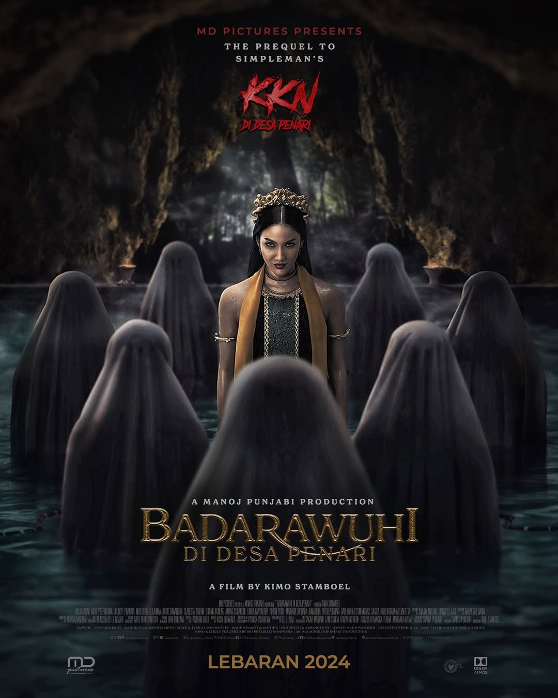

Badarawuhi di Desa Penari
-
Deskripsi Singkat: Film ini adalah horor Indonesia yang merupakan spin-off dari KKN di Desa Penari. Ceritanya berfokus pada sosok mistis Badarawuhi dan latar belakang desa yang penuh teror serta kekuatan gaib.
-
Aktor Pemeran Utama: Aulia Sarah, Maudy Effrosina, Jourdy Pranata
-
Pengarang Cerita: SimpleMan
Sutradara: Kimo Stamboel
-
Rating:
-
Sinopsis: Cerita mengikuti sekelompok mahasiswa yang menjalani kegiatan KKN di sebuah desa terpencil. Di desa tersebut, mereka mulai mengalami kejadian-kejadian aneh yang berhubungan dengan sosok Badarawuhi, makhluk gaib penjaga desa.
Terungkap bahwa desa tersebut memiliki aturan adat yang tidak boleh dilanggar. Ketika aturan itu dilanggar, teror mulai terjadi dan mengancam keselamatan mereka.